Step into the world of ancient kingdoms, timeless architecture, and legendary wonders.
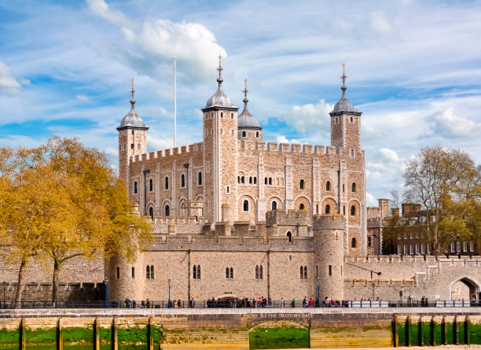
The Tower of London is one of England’s most iconic and historic fortresses. Built in the 11th century, it has served as a royal palace, prison, and treasury. Its ancient walls hold stories of kings, queens, and legendary events. Today, it stands as a UNESCO World Heritage Site and a major visitor attraction.
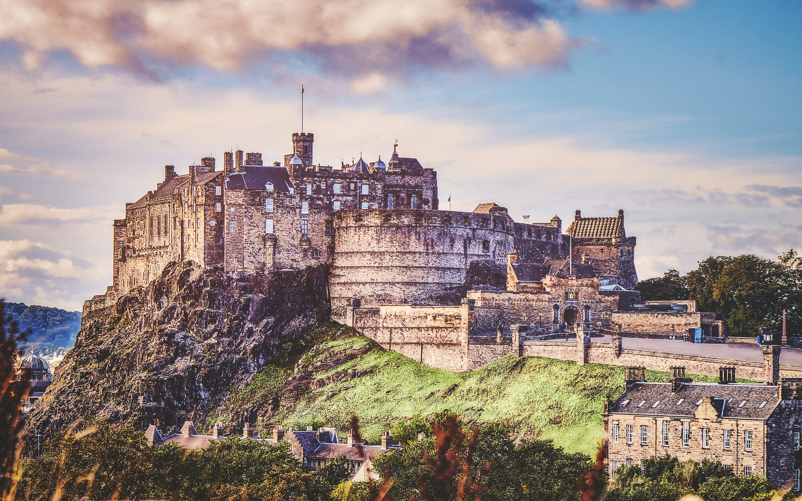
Edinburgh Castle is a mighty fortress that dominates the skyline of Scotland’s capital. Standing on an ancient volcanic rock, it has guarded the city for over a thousand years. The castle holds Scotland’s Crown Jewels and centuries of royal history. Today, it is one of the most visited and iconic landmarks in the country.
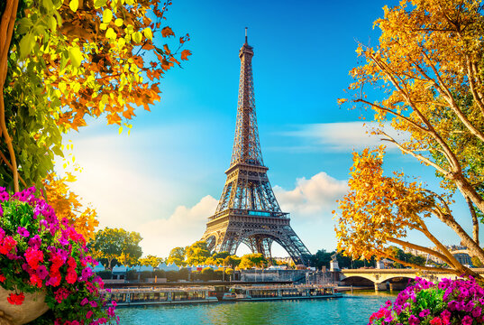
The Eiffel Tower is the most iconic landmark in Paris and a global symbol of France. Built in 1889 for the World’s Fair, it was once the tallest structure in the world. Its iron lattice design attracts millions of visitors every year. Today, it stands as a masterpiece of engineering and a romantic cultural icon.
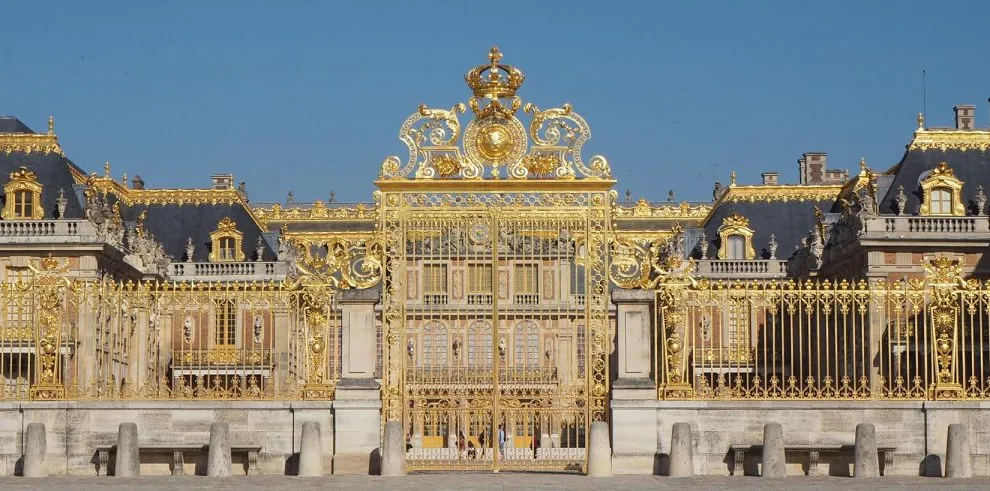
The Palace of Versailles is one of France’s grandest and most luxurious royal residences. Originally a hunting lodge, it was transformed into a magnificent palace by King Louis XIV. Its stunning halls, gardens, and fountains reflect the height of French royal power. Today, it stands as a UNESCO World Heritage Site and a masterpiece of Baroque architecture.
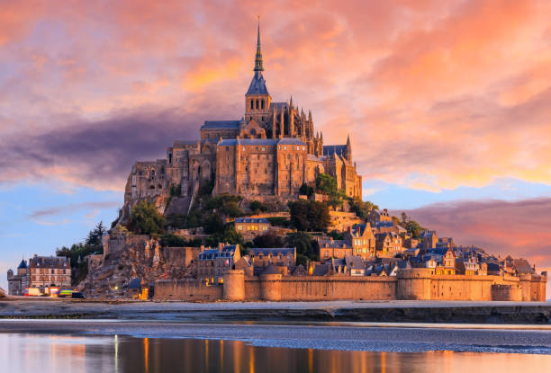
Mont Saint-Michel is a breathtaking island abbey rising dramatically from the sea in Normandy, France. For centuries, it has served as a sacred pilgrimage site and a marvel of medieval architecture. Surrounded by powerful tides, the island creates a magical and ever-changing landscape. Today, it stands as one of France’s most iconic and enchanting UNESCO World Heritage Sites.
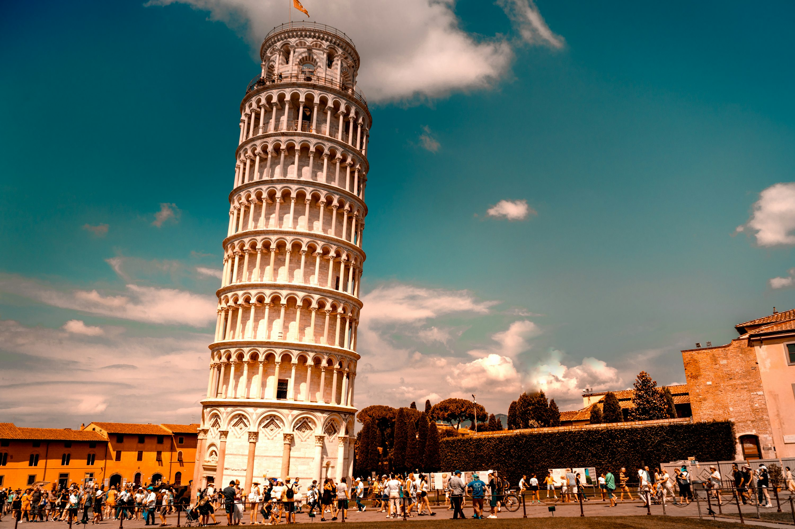
The Leaning Tower of Pisa is one of Italy’s most famous and unusual landmarks. Built as a cathedral bell tower, it became world-renowned for its unintended tilt. Its white marble architecture and unique lean attract millions of visitors every year. Today, it stands as a remarkable example of medieval engineering and resilience.
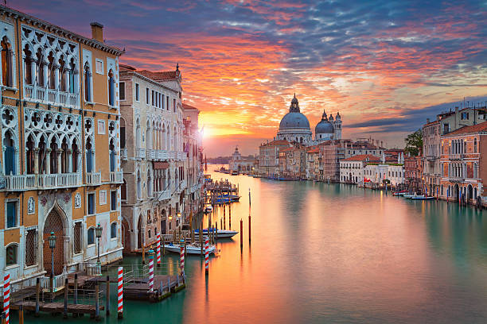
The Grand Canal is the main waterway that winds through the heart of Venice, Italy. Lined with centuries-old palaces, churches, and bridges, it showcases the city’s rich history. Gondolas and boats glide along its shimmering waters, creating a uniquely romantic atmosphere. Today, it remains one of Venice’s most iconic and unforgettable sights.
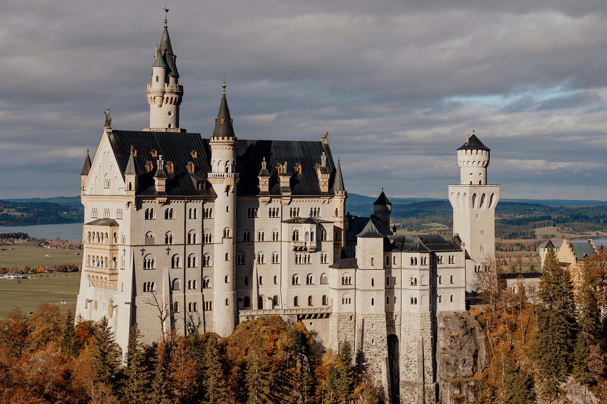
Neuschwanstein Castle is a fairy-tale palace perched high in the Bavarian Alps of Germany. Built by King Ludwig II, it was inspired by romantic architecture and medieval legends. Its towers, halls, and mountain views make it one of the world’s most photographed castles. Today, it stands as a symbol of fantasy and remains a major tourist attraction in Europe.

The Brandenburg Gate is Berlin’s most iconic monument and a symbol of German unity. Built in the 18th century, it once marked the entrance to the city. It has witnessed major historical events, from royal parades to the fall of the Berlin Wall. Today, it stands as a powerful landmark of peace, freedom, and history.
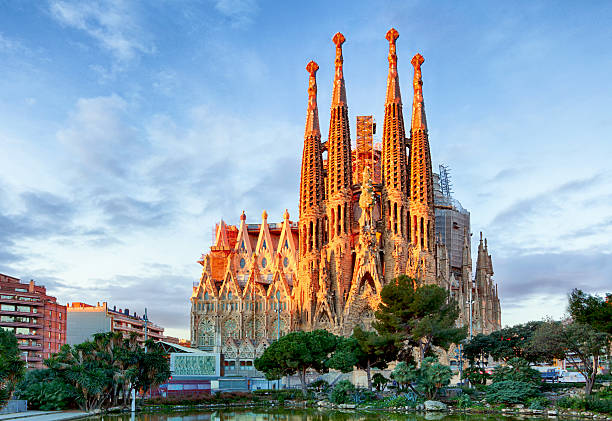
The Sagrada Família is Barcelona’s most iconic basilica and a masterpiece by architect Antoni Gaudí. Its unique design blends nature-inspired shapes with breathtaking Gothic and modernist elements. Construction began in 1882 and continues today, making it one of the world’s longest-running architectural projects.
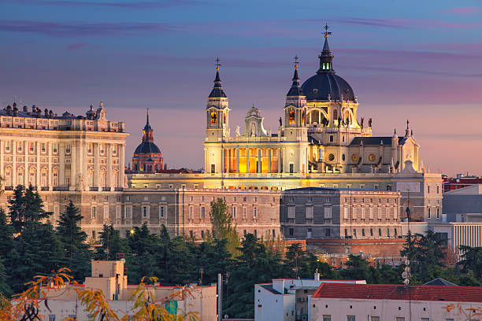
The Royal Palace of Madrid is Spain’s largest and most magnificent royal residence. Built in the 18th century, it showcases grand architecture, lavish halls, and historic art. Although the royal family no longer lives there, it remains a major ceremonial site. Today, it stands as a symbol of Spain’s heritage and a highlight for visitors to Madrid.
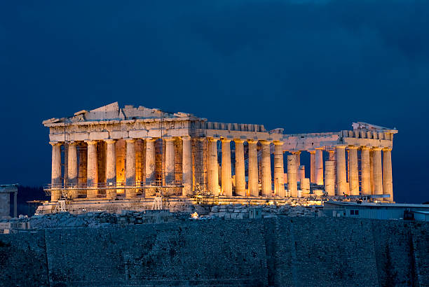
The Royal Palace of Madrid is Spain’s grandest official residence of the monarchy. Built in the 18th century, it showcases stunning Baroque and Neoclassical architecture. Its lavish halls, artworks, and courtyards reflect centuries of royal history. Today, it serves as a ceremonial palace and one of Madrid’s top cultural landmarks.
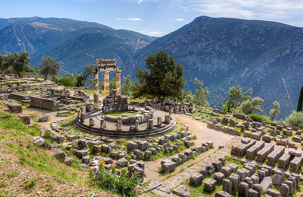
The Delphi Ruins in Greece were once considered the center of the ancient world. Home to the famous Oracle of Delphi, it served as a sacred site dedicated to Apollo. Its temples, theatre, and mountain views reflect the grandeur of ancient Greek civilization. Today, Delphi remains one of Greece’s most important archaeological and spiritual landmarks.
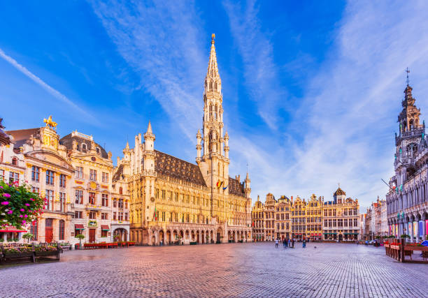
Al-Ula Old Town is an ancient settlement made of mud-brick houses and narrow alleyways. It served as a key stop along historic trade routes crossing northwest Arabia. The town showcases traditional Arabian architecture and centuries-old heritage. Today, it is a restored cultural site that reflects the rich history of Al-Ula.
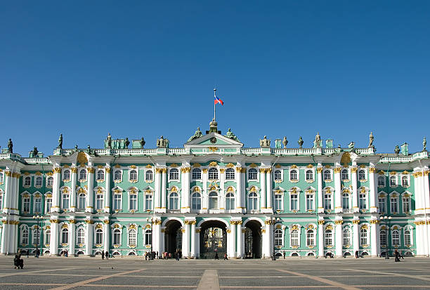
Bukhara Old City is one of Central Asia’s best-preserved ancient settlements. It was a major stop on the Silk Road, known for its trade, culture, and learning. The city is filled with mosques, madrasas, bazaars, and centuries-old architecture. Today, it stands as a UNESCO World Heritage Site showcasing rich Islamic heritage.